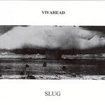

| Artist: | Vivahead |
| Title: | Slug |
| Label: | Pulper Music Pulper 03 |
| Length(s): | 44 minutes |
| Year(s) of release: | 2002 |
| Month of review: | [04/2004] |
| 1) | Artism Part One (Away) | |
| 2) | Aunti | |
| 3) | Possible Limited | |
| 4) | Lying Down To Lie | |
| 5) | Follow | |
| 6) | Weird Goggles | |
| 7) | Causeway Brigadiers | |
| 8) | The Cube | |
| 9) | Artism Part Two (Let Me In) |
Weird Goggles takes a sampling approach and is pretty avant prog, resembling material of certain -more experimentally directed- Cuneiform artists. This is definitely a track that has more experiment than it does melody. Causeway Brigadiers has the same style: there is some more vocal experimentalism here than the previous track. Interesting, but not exactly good music. Gives me a "yeah yeah, get on with it" feeling. Even though Possible Limited is sort of an intermezzo, it has the same kind of experimental feel. Still, it feels more whole, and less experiment.
The Cube also has an avant prog/Cuneiform feel, but this time more in the direction of artists that make more grave material, although it's more the general atmosphere of the track than the complexity that brings the association. Pretty good one, this. The same sort of atmosphere can be found in Aunti.
Lying Down To Lie is a far more modern track, with vocoder vocals and a drum 'n' bass beat underneath. The synths now sound pretty modern too, supported with the sort of humphy Hammond organ you would also hear in Crystal Waters' Gypsy Woman. I find it irritates me.
Follow chooses more of a balance. The synths are used melodically and sound more modern than in the first four tracks, but there is no rhythm. This melodic style was employed regularly in the mid eighties.
Closer Artism Part Two is a bit slow, combining melodic with more experimental aspects. As the track progresses the initially somewhat sharp sounds make way for warmer sounds. The track floats through its full length in a rather pleasant and almost soothing way. Nice closer.